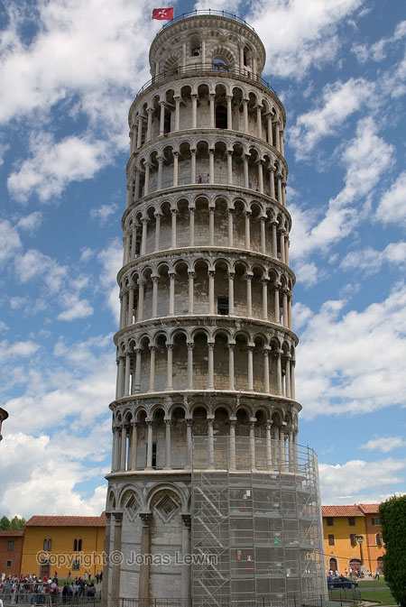
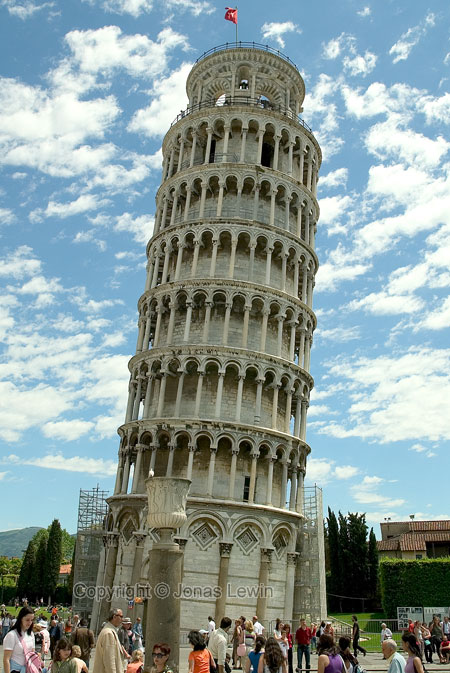
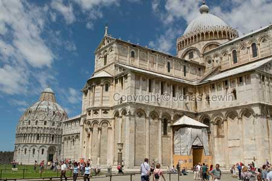
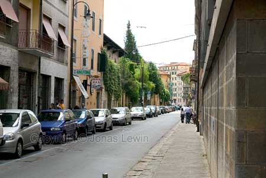
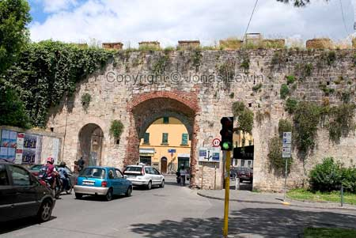
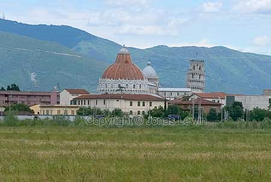

Italy, Pisa, 2004.
|
Pisa is just another famous Italian city. It has the Tower of Pisa, which is so famous for not standing straight. However, it looks like the tower is fairly straight, and I was a bit confused when taking this photo. And then I took this photo, and it all made sense. This must be the worlds most famous mistake. All they tried to do was to build a nice big bell tower, and failed miserably with the fundamentals. And we tourists come from all over the world to look at this monument of error. Probably the cathedral beside the bell tower. Just a normal street in Pisa. We where here on a Sunday, and this very Sunday was the day of the Pisa Marathon. So all the streets where "off limits" to cars, unless they where already there during the night. This is probably why the city was not full of cars and busses. I guess that this is the inner wall in Pisa. As a tourist, you want to stay within the boundaries of the wall. Pisa center, and the Tower, viewed from a distance. |